Qué es
Los encargados de la enseñanza del idioma inglés para toda la comunidad Capullos, operado por WE GO English School.
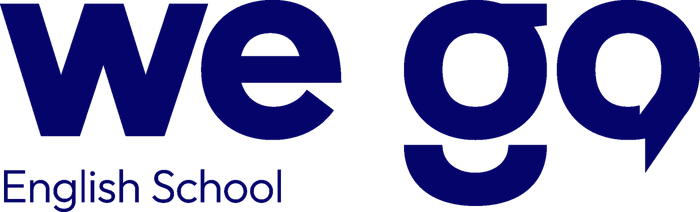
× Capullos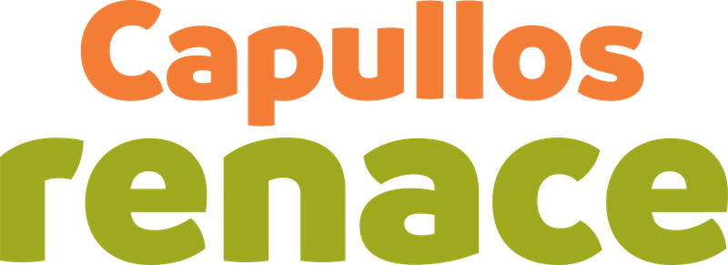
Una propuesta de WE GO English School para la enseñanza del inglés en toda la comunidad Capullos.
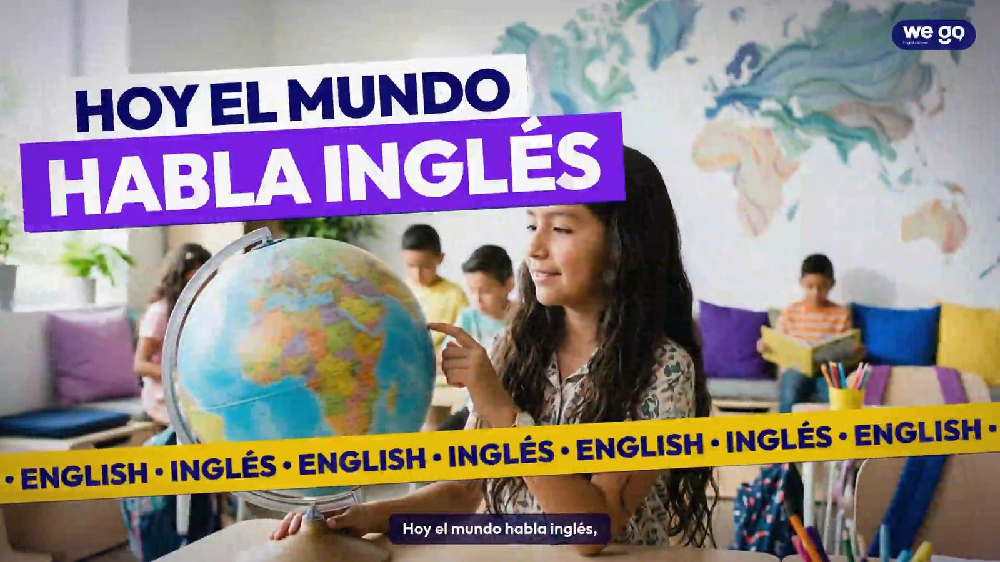
Learn it. Practice it. React in English.
02 Nuestra contribución
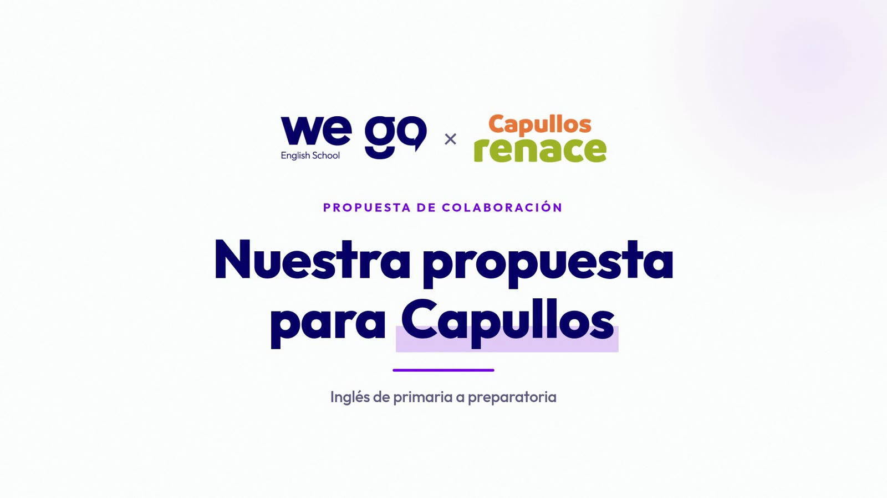
Video: la contribución de WE GO a la comunidad CapullosPróximamente
03 La propuesta en un vistazo
Los encargados de la enseñanza del idioma inglés para toda la comunidad Capullos, operado por WE GO English School.
Para todos: niñas, niños y jóvenes de primero de primaria a preparatoria, en nuestros programas GO KIDS, GO TEENS y GO SENIORS.
De lunes a viernes, 1 hora diaria, por las tardes.
En la comodidad de las instalaciones de Capullos.
Maestros, materiales y la plataforma WE GO Hub en cada clase.
Todos los grupos arrancan juntos desde el primer nivel, para que todos crezcan juntos y con seguridad.
Nuestra aportación
WE GO está dispuesto a asumir la mayor parte del costo del programa, como nuestra aportación a las niñas, niños y jóvenes de Nuevo León.
04 Contexto
Nuevo León reconoce el inglés y la tecnología como clave para su competitividad y su futuro.
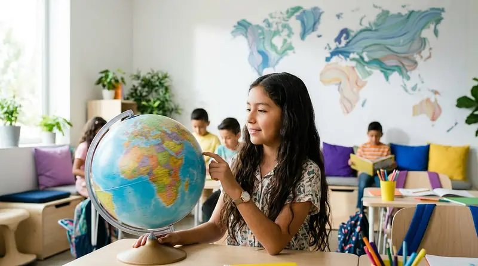
Inglés y computación “nos están haciendo mucho más competitivos”.
Gobierno de Nuevo León, mayo de 2025
“Estamos poniendo inglés como extra currícula” en las escuelas públicas.
Gobierno de Nuevo León, arranque del ciclo 2026-27
Capullos puede sumarse a esta visión, con inglés todos los días en sus propias instalaciones.
05 Nuestro compromiso
WE GO está dispuesto a asumir una parte importante del costo del programa, como nuestra aportación a las niñas, niños y jóvenes de Nuevo León.
06 Lo que vamos a lograr
No se trata solo de enseñar inglés. Se trata de que cada niña, niño y joven de Capullos lo viva, lo entienda y lo haga suyo.
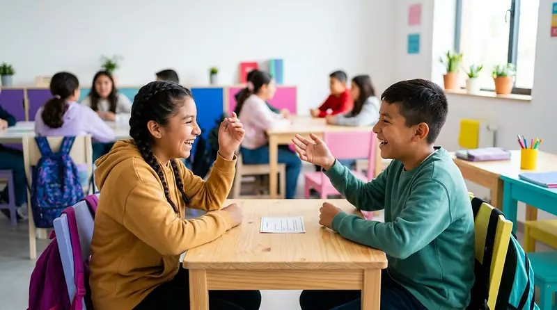
Paso 01
De lunes a viernes, una hora diaria. No es una clase suelta a la semana: es el idioma presente en su rutina, día tras día. Capullos ve grupos que llegan con ganas; los alumnos escuchan, repiten y participan tanto que el inglés deja de ser algo lejano y se vuelve parte de su semana.
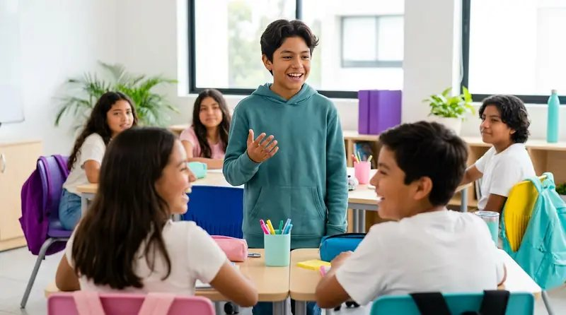
Paso 02
Con práctica constante y un ambiente seguro, equivocarse se vuelve parte de aprender. Levantan la mano, se animan a responder, a preguntar y a participar en voz alta. Ese primer “Can I try?” es el momento en que todo cambia.
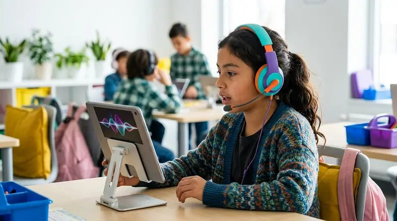
Paso 03
Lo que antes era ruido empieza a tener sentido: siguen instrucciones, entienden a su maestro, a sus compañeros, videos y textos de su nivel. Comprender les da seguridad, y esa seguridad los impulsa a seguir avanzando.
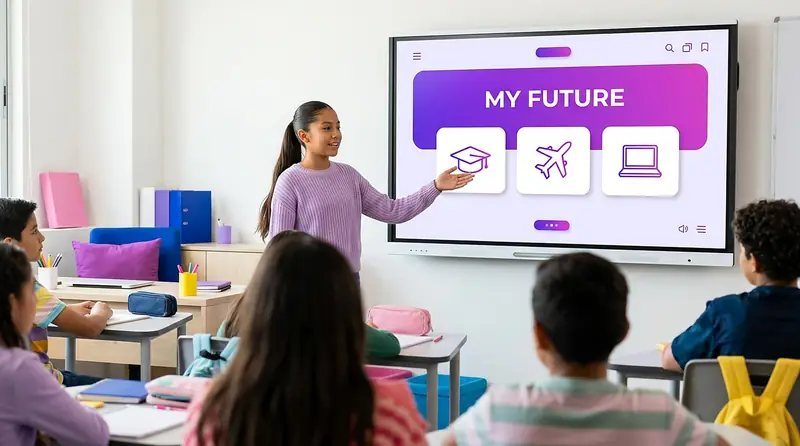
Paso 04
Se presentan, preguntan, explican y conversan en inglés en situaciones reales. Ya no lo traducen palabra por palabra: lo usan. Ese es el verdadero objetivo, que el inglés sea una herramienta suya para siempre.
Cinco días a la semana construyen constancia, puntualidad y compromiso. Aprenden que el esfuerzo de cada día se nota, una lección que llevan a todo lo que hacen.
Al trabajar con WE GO Hub dentro del salón, usan una plataforma educativa con naturalidad: siguen actividades, practican pronunciación y avanzan en misiones interactivas.
El inglés abre puertas: en la secundaria, en la preparatoria, en sus estudios futuros y en un mundo laboral que cada vez lo pide más.
Comunicarse en otro idioma cambia cómo se ven a sí mismos. Ganan seguridad para participar, presentar y creer en lo que pueden lograr.
Inglés y tecnología, juntos, todos los días: justo las habilidades que Nuevo León reconoce como clave para su competitividad.
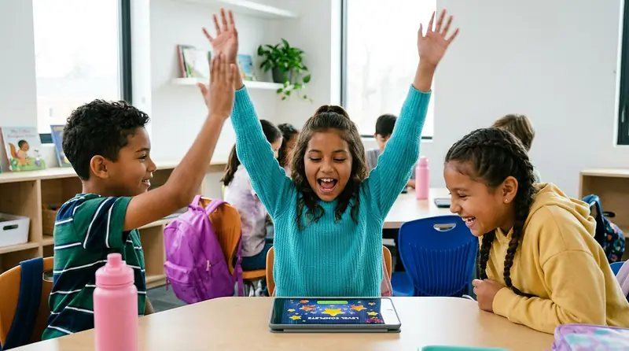
Cómo lo logramos
07 Modelo listo para operar
Maestros, materiales y plataforma integrados, para un inicio inmediato de clases.
Maestros especializados de WE GO English School, con la filosofía CONNECT y el modelo de aprendizaje REACT.
Los materiales de nuestros programas GO KIDS, GO TEENS y GO SENIORS.
WE GO Hub, con el perfil y los accesos de cada alumno.
Aprovechamos la infraestructura tecnológica que la Escuela Capullos ya tiene —salones con proyectores digitales, internet y área de cómputo— para llevar WE GO Hub a cada clase.
08 Así es cada clase
Cada clase combina al maestro, la dinámica del grupo y la plataforma WE GO Hub dentro del salón, para que aprender inglés sea activo, cercano y divertido.
Actividades en grupo y en parejas para que cada alumno escuche, hable y practique en cada sesión.
Videos, canciones, imágenes y situaciones de la vida diaria proyectados en el salón.
Laboratorio de pronunciación, misiones interactivas y gamificación con WE GO Hub.
Maestros que acompañan y animan, para que cada alumno se atreva a usar el idioma.
09 Quiénes somos y cómo enseñamos
Una escuela de inglés con una filosofía de enseñanza, un modelo de aprendizaje y una plataforma educativa que trabajan juntos en cada clase.
Nuestra filosofía
Connect what you learn with how you communicate.
Con CONNECT, lo que el alumno aprende se convierte en la manera en que realmente se comunica. Esta filosofía se lleva a la práctica con REACT, nuestro modelo de aprendizaje.
Nuestro modelo de aprendizaje
From learning English to reaching real communication.
El inglés que realmente se usa, enseñado como realmente se vive.
Cada clase parte de situaciones, vocabulario y expresiones de la vida diaria, para que lo aprendido tenga sentido desde el primer día.
Los alumnos escuchan, ven y viven el idioma en cada clase.
La exposición constante al inglés, con contenido multimedia y la dinámica del grupo, desarrolla el oído y la naturalidad.
Cada contenido se convierte en desempeño.
Con práctica guiada y evaluación constante, el alumno aplica lo que aprende en actividades y misiones dentro de la clase.
Comprender y expresarse en inglés con seguridad.
Paso a paso, el alumno desarrolla la capacidad de entender y de comunicarse en inglés de forma oral y escrita.
El idioma se convierte en confianza.
El inglés se vuelve una herramienta para su desarrollo: más seguridad, más oportunidades y una nueva forma de ver su futuro.
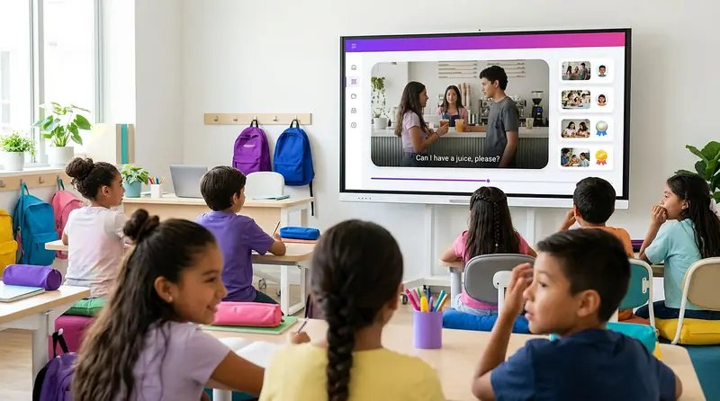
Nuestra plataforma educativa
WE GO Hub se usa dentro de la clase: el maestro conduce la sesión y la plataforma suma contenido, práctica y seguimiento, para que cada alumno participe, practique y avance a su propio ritmo. Cada alumno tiene su perfil y sus accesos.
Nuestros programas
Para niñas y niños
Para adolescentes
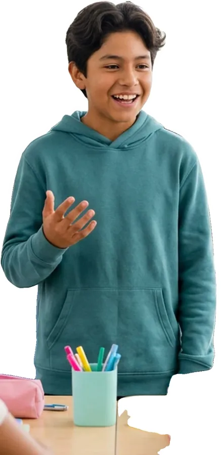
Para jóvenes
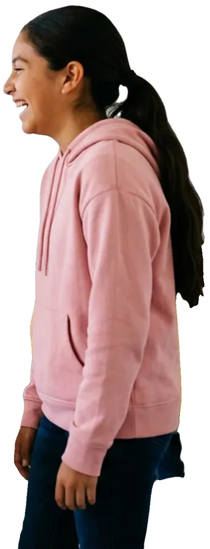
Flashcards reales del programa GO KIDS.
10 Siguiente paso
Queremos construir esto juntos. Será un gusto reunirnos para presentarles nuestra propuesta y escuchar sus ideas, y así llevar este proyecto tan lejos como lo imaginen Capullos y el Gobierno del Estado.
Karla Zavala
CEO · WE GO English School